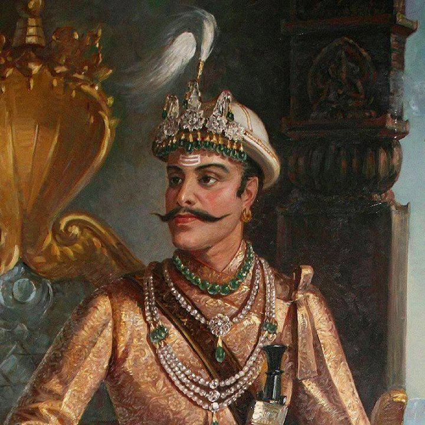

Rana Bahadur Shah Dev
Biography:
Rana Bahadur Shah Dev was born on May 25, 1775 in Basantapur, Nepal.
He was the eldest son of Pratab Singh Shah Dev and Rajendra Rajya Lakshmi Devi.
He was the third King of Kingdom of Nepal from 17 November, 1777 to 8 March, 1799.
He died at the age of 30 on 25 April, 1806 in Basantapur, Nepal.